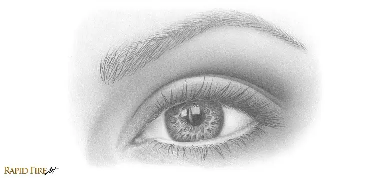

Cómo hacer que los dibujos destaque
Consejo n.°1:aplique la perspectiva
La perspectiva se utiliza para dar la ilusión de profundidad o distancia en una superficie 2D. Al aplicarla correctamente, puedes alejar o acercar áreas , lo que ayuda a que tu dibujo parezca más tridimensional y destaque.
Si tu dibujo es una escena o un sujeto que se aleja, recuerda que los objetos deben verse cada vez más pequeños a medida que se alejan del espectador. Para dibujar una escena sencilla como esta, puedes usar la perspectiva lineal de un punto para determinar el tamaño adecuado para cada objeto.
Simplemente alinee los bordes de su objeto a un solo punto en la distancia, usando una regla. Aplicar la perspectiva correctamente sienta las bases para tus dibujos 3D.
Consejo n.°2:aplicar desenfoque
El desenfoque en ciertas partes del dibujo ayuda a crear perspectiva y dirigir la atención del espectador. Al reducir detalles en las áreas secundarias, los ojos se enfocan en el objeto principal.
Usar un pañuelo para difuminar crea un efecto borroso que aumenta la ilusión de profundidad: los objetos lejanos se ven más difusos y los cercanos más nítidos. Para destacar un elemento, basta con mantenerlo definido y desenfocar los demás.

Tienes control total sobre en qué quieres que la audiencia centre su atención. Esta técnica es útil para diferenciar objetos del primer plano y del fondo entre sí, así como para indicar distancia.
Consejo n.°3:sombrea más
Si sus dibujos generalmente tienen un sombreado mínimo y contienen principalmente blanco o el color del papel (como la imagen de arriba), será muy difícil lograr que parezca 3D.
Lo primero que puedes hacer es familiarizarte con el sombreado de todo el dibujo, dejando solo las zonas más brillantes blancas o casi blancas, intentando que no se vea demasiado el papel.
Consejo n.°4:usa degradados
Un degradado es una transición progresiva de claro a oscuro que se logra variando la presión del lápiz. Surge porque los objetos se ven más oscuros cuanto más se alejan de la luz, incluso si tienen superficies planas.
He aquí un ejemplo: para la mayoría de los principiantes, dibujar una arruga o un pliegue profundo podría parecerse a la imagen de abajo: un conjunto de líneas en la superficie de la piel.
El problema aquí es que simplemente parece una línea tatuada en la superficie de la piel.
Para que la piel no se vea plana, las arrugas deben sombrearse con una transición gradual de claro a oscuro hacia el surco, simulando cómo se aleja de la luz.

Un degradado hace que las arrugas y pliegues se perciban como superficies curvas y realistas. Las líneas solas no bastan; siempre que sea posible, usa transiciones graduales de luz a sombra, ya que incluso superficies planas muestran variaciones de intensidad según la luz.

Consejo n.°5:elimine los contornos obvios
Cualquier contorno en tu dibujo puede darle un aspecto caricaturesco, lo que le resta valor a cualquier esfuerzo por lograr un aspecto tridimensional... porque en la vida real no hay contornos. Así que asegúrate de borrarlos o intenta integrarlos con el entorno hasta que desaparezcan.
Consejo n.°6:Aprovecha al máximo tus lápices
Un dibujo puede verse plano si carece de contraste. Aunque el sombreado esté bien hecho, usar solo tonos claros de gris impide que haya profundidad; es necesario marcar más la diferencia entre luces y sombras.
Si usas solo un rango limitado de grises, el dibujo se ve plano. Para evitarlo, aprovecha el potencial del lápiz aplicando más presión al sombrear o usando un lápiz más suave para obtener tonos más oscuros.
Por ejemplo, si estás usando un lápiz HB, cámbialo a uno más suave, como un 2B o incluso un 4B, si lo deseas.
Al sombrear con un lápiz más suave, el dibujo debería verse más oscuro de lo normal. Al hacer este cambio, empezarás a ver que tu dibujo adquiere una forma más tridimensional.
Oscurecer selectivamente áreas ocultas de la luz aumenta el contraste y la profundidad, logrando un dibujo más atractivo y diferenciado del fondo sin que se vea artificial.